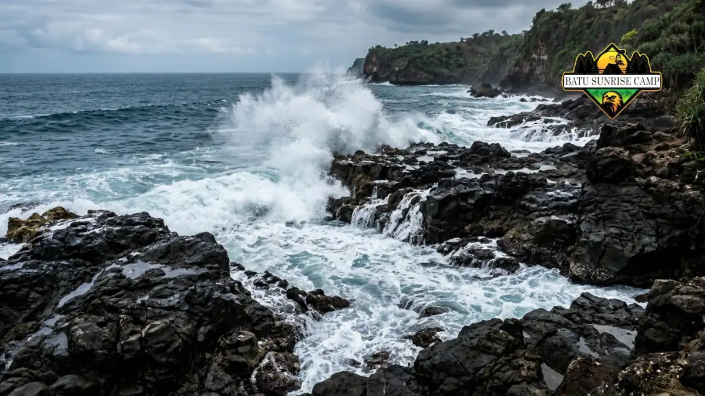

Keselamatan memancing di pantai saat camping berarti memeriksa prakiraan gelombang BMKG, memahami pasang surut, memakai perlengkapan pelindung, dan menunda memancing ketika kondisi laut melampaui batas aman.
- Periksa prakiraan cuaca dan gelombang BMKG sebelum dan selama berkemah.
- Gelombang di atas 1,25 meter dan angin di atas 15 knot berisiko tinggi bagi perahu nelayan, sehingga pemancing pantai perlu waspada.
- Fase bulan dan pasang maksimum dapat memicu air pasang tinggi di pesisir.
- Alas kaki antiselip, headlamp, dan kotak P3K termasuk perlengkapan dasar.
- Patuhi aturan setempat dan batas hasil tangkapan wisata memancing.
Mengapa Keselamatan Perlu Menjadi Prioritas Saat Memancing di Pantai?
Keselamatan perlu menjadi prioritas karena pemancing berdiri di bibir air, kondisi ombak dan pasang bisa berubah cepat, dan camping membuat orang berada lama di area pesisir.
Memancing terlihat santai, tetapi pantai adalah lingkungan dinamis. Ombak dapat menyapu pemancing yang berdiri di karang, sedangkan pasang naik dapat memutus jalur kembali. Camping memperpanjang waktu paparan karena pemancing sering memancing menjelang malam.
BMKG berulang kali mengeluarkan peringatan dini sepanjang 2026. Pada peringatan 25 hingga 28 Mei 2026, BMKG menyebut gelombang 2,5 hingga 4 meter berpeluang terjadi di sejumlah perairan, dan BMKG menjadikan angin di atas 15 knot serta gelombang di atas 1,25 meter sebagai batas risiko bagi perahu nelayan. Peringatan lain pada 9 hingga 12 Juni 2026 kembali menyebut gelombang 2,5 hingga 4 meter di perairan selatan.
Pemancing pantai tidak memakai perahu, tetapi batas ini memberi gambaran kapan laut mulai tidak bersahabat.
Merencanakan keselamatan sebelum berangkat jauh lebih efektif daripada bereaksi saat kondisi memburuk. Informasi alat yang dibawa dibahas dalam panduan alat pancing untuk camping pantai.
Berapa Tinggi Gelombang yang Dianggap Berbahaya untuk Memancing di Pantai?
BMKG menyebut gelombang di atas 1,25 meter dengan angin di atas 15 knot berisiko bagi perahu nelayan, sehingga pemancing pantai sebaiknya waspada dan menjauhi tepi air pada kondisi serupa.
Angka ini merupakan acuan untuk perahu nelayan, bukan standar khusus pemancing pantai. Pantai dengan ombak pecah, arus balik, atau karang dapat berbahaya bahkan pada gelombang lebih rendah. Pemancing perlu menilai kondisi lokal secara langsung.
Periksa prakiraan di laman BMKG Maritim sebelum berangkat dan ulangi pengecekan setiap pagi. Jika laman menunjukkan peringatan gelombang tinggi di perairan terdekat, tunda memancing atau pilih lokasi yang terlindung.

Ombak besar menghantam pesisir pantai menandakan kondisi laut yang berbahaya dan tidak aman untuk memancing dari tepi pantai.
Bagaimana Pasang Surut dan Fase Bulan Memengaruhi Keselamatan?
Pasang surut dan fase bulan memengaruhi tinggi muka air, sehingga pasang maksimum dapat menggenangi area pantai tempat tenda atau pemancing berada dan menghalangi jalur kembali.
Pada Maret 2026, BMKG memperingatkan potensi banjir pesisir atau rob pada periode 12 hingga 27 Maret 2026.
BMKG menjelaskan bahwa fase Bulan Baru pada 19 Maret 2026 dan perigee pada 22 Maret 2026 dapat meningkatkan pasang air laut. Informasi ini menunjukkan bahwa kondisi bulan perlu diperhitungkan.
Pasang naik juga dapat mengubah area memancing menjadi tidak aman. Pemancing di karang atau tanjung bisa terjebak ketika air naik. Pelajari jadwal pasang surut setempat sebelum berangkat dan dirikan tenda jauh di atas garis air tertinggi.
Perlengkapan Keselamatan Apa yang Perlu Dibawa Saat Memancing Sambil Camping?
Perlengkapan keselamatan dasar meliputi alas kaki antiselip, headlamp, kotak P3K, tang pelepas kail, pelampung bila memancing di area berisiko, ponsel dengan daya cukup, serta air minum.
- Alas kaki antiselip. Melindungi dari karang licin dan pecahan kerang.
- Headlamp dan cadangan baterai. Memancing malam hari membutuhkan penerangan yang aman.
- Kotak P3K. Berisi plester, antiseptik, dan perlengkapan untuk luka kecil, termasuk luka akibat kail.
- Tang pelepas kail dan pemotong senar. Membantu melepas kail dengan cepat bila menancap.
- Pelampung. Dianjurkan bila memancing di area berkarang atau tepi dalam.
- Topi, kacamata, dan tabir surya. Melindungi dari terik dan kail yang melayang saat melempar.
Bawa pula daftar kontak darurat setempat dan beri tahu rekan perjalanan tentang rencana memancing.
Perlengkapan ini membantu penanganan awal, tetapi cedera serius tetap memerlukan bantuan tenaga medis atau petugas penyelamat.
Apa Aturan Dasar Memancing Rekreasi di Indonesia?
Aturan dasar memancing rekreasi di Indonesia menyebut wisata memancing sebagai penangkapan ikan untuk rekreasi, bukan mencari nafkah atau keuntungan, dengan batas hasil tangkapan per kapal setiap kegiatan.
Peraturan Menteri Kelautan dan Perikanan Nomor 27 Tahun 2021 mengatur penangkapan ikan yang bukan bertujuan komersial.
Aturan itu menyebut batas hasil tangkapan per kapal paling berat 100 kilogram atau paling banyak 50 ekor untuk setiap kegiatan wisata memancing, dengan kelebihan wajib dilepaskan dan dilaporkan.
Pemancing pantai perseorangan sebaiknya memahami bahwa aturan setempat dapat tambahan, misalnya larangan di kawasan konservasi atau jalur tertentu. Bertanyalah kepada pengelola pantai atau dinas setempat.
Artikel ini bukan nasihat hukum, sehingga untuk kepastian hukum pembaca perlu merujuk sumber resmi atau berkonsultasi dengan pihak berwenang.
Bagaimana Etika Memancing agar Pantai Tetap Lestari?
Etika memancing meliputi membawa pulang semua sampah termasuk senar bekas, mengambil ikan seperlunya, melepas ikan kecil, dan tidak merusak terumbu karang atau vegetasi pantai.
Senar bekas berbahaya bagi burung, penyu, dan satwa lain karena dapat melilit atau tertelan. Siapkan kantong sampah khusus dan potong senar bekas menjadi bagian pendek sebelum dibuang pada tempatnya.
Hindari mengumpulkan umpan dari terumbu karang atau mengganggu sarang burung pantai. Jaga api unggun tetap kecil dan jauh dari vegetasi. Kebiasaan sederhana ini menjaga pantai tetap layak untuk pemancing dan pekemah berikutnya.
Bagaimana Langkah Tanggap Bila Terjadi Kondisi Darurat di Pantai?
Bila terjadi kondisi darurat, menjauhlah dari air, minta bantuan orang sekitar atau petugas, hubungi layanan darurat setempat, dan hindari menolong dengan masuk ke ombak tanpa perlengkapan.
Berikut langkah dasar yang dapat dilakukan.
- Pastikan diri sendiri dalam posisi aman sebelum menolong orang lain.
- Hubungi petugas pantai, SAR, atau layanan darurat setempat.
- Lemparkan benda apung seperti pelampung atau jerigen kosong kepada korban bila ada.
- Berikan pertolongan pertama dasar bila terlatih, dan jaga korban tetap hangat.
- Jangan menarik kail dalam yang menancap secara paksa; tutup luka dan cari bantuan medis.
Informasi ini bersifat umum dan tidak menggantikan pelatihan pertolongan pertama maupun arahan tenaga profesional.
Kesimpulan
Keselamatan memancing di pantai saat camping bertumpu pada tiga hal: memeriksa prakiraan gelombang dan pasang surut BMKG, membawa perlengkapan pelindung, dan mematuhi aturan serta etika setempat. Bila gelombang di atas 1,25 meter atau angin di atas 15 knot, tunda memancing.
Dirikan tenda jauh dari garis pasang tertinggi, bawa pulang semua sampah, dan pahami aturan lokal. Persiapan sederhana ini membuat camping pantai lebih aman dan menyenangkan.
Untuk panduan lengkap tentang semua alat pancing yang perlu disiapkan saat camping pantai, baca artikel pillar Panduan Memilih dan Menyiapkan Alat Pancing untuk Camping di Pantai serta ulasan teknik memancing di pantai saat camping langkah demi langkah.

Pertanyaan Umum (FAQ)